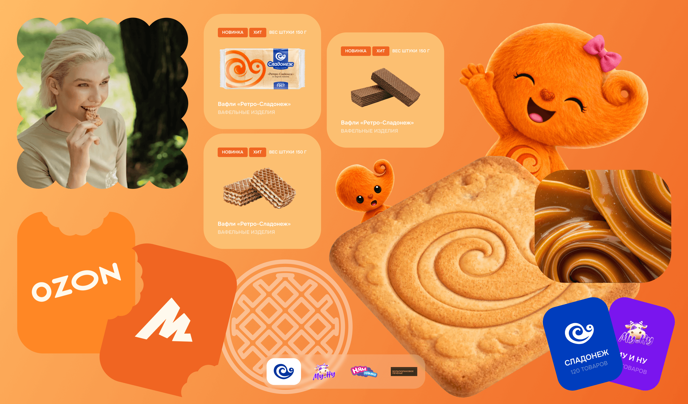
Проблема
У компании нет сайта, что мешает развитию бизнеса, привлечению новых партнеров и развитию бренда среди покупателей.
Решение
Создание корпоративного сайта, отражающего информацию о:
деятельности компании, ее направлениях и брендах;
условиях для партнеров;
бренде производителя.
Результат
Прототип на 20 страниц;
концепция корпоративного сайта; повышение партнерской и клиентской базы
О проекте
«Сладонеж» — крупный производитель кондитерских изделий, представленный более чем в 50 городах России. В рамках развития бренда, компания обратилась за созданием корпоративного сайта. Важно было четко показать все суббренды компании и внедрить на сайт нового маскота — «Сладика». Компания обратилась в «Восход» после неудачного опыта работы с другой студией.
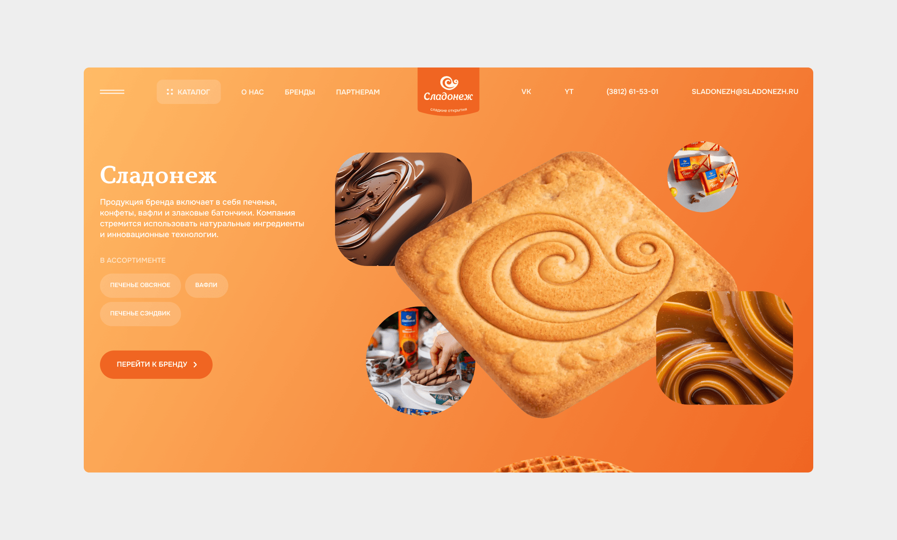
Проблемы
Полное отсутствие сайта приводила к нескольким проблемам сразу:
- затрудняется заключение новых партнерств
- конечный потребитель не может подробно изучить деятельность компании, доверие подрывается
Цели проекта
С нуля создать новый сайт производителя, который:
- презентует бренд
- демонстрирует ассортимент
- привлекает дистрибьюторов и поставщиков
- повышает доверие к продукции
Мои задачи
Я отвечал за раннюю продуктовую стадию проекта.
Что я сделал:
- провёл анализ бизнес-контекста
- исследовал целевую аудиторию
- проанализировал сайты конкурентов
- разработал информационную архитектуру
- спроектировал пользовательские сценарии
- разработал прототип сайта
После согласования структуры участвовал в создании дизайн-концепции интерфейса.
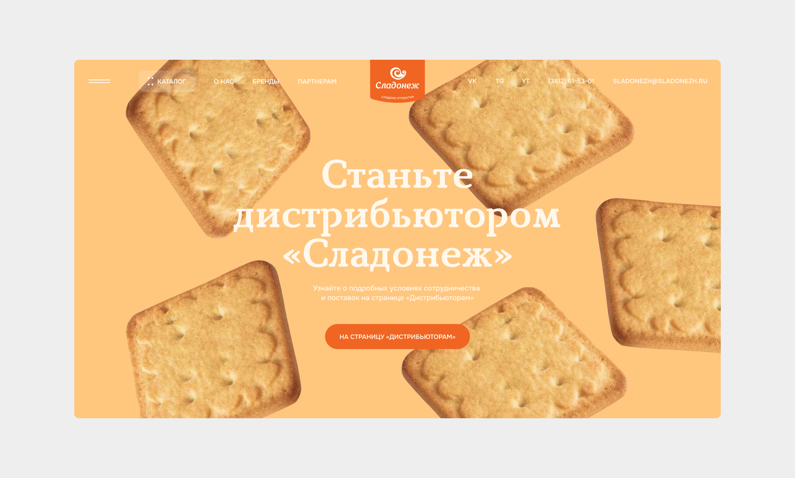
Инсайты исследований
Я провел анализ пользователей и конкурентов, чтобы выявить паттерны и подходы к проектированию интерфейса в индустрии. На их основе я вывел ключевые инсайты.
Инсайт
Решение
Бренд имеет не только несколько суббрендов, но и несколько направлений продукции.
Сделать фильтрацию продукции по брендам и направлениям.
Конкуренты не размещают информацию для партнеров, что мешает заключать новые контракты на выгодных условиях.
Добавить на сайт отдельную страницу для дистрибьюторов и поставщиков.
У B2B-аудитории нет удобного способа ознакомиться с ассортиментом.
Создать каталог с детальной информацией, где потенциальные партнеры могут узнать данные о товаре.
Ключевые решения
Каталог продукции
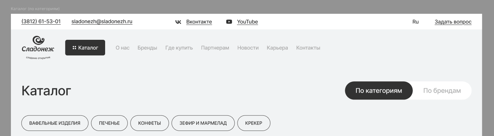
Каталог должен был учитывать сложную структуру брендов.
Поэтому мы добавили два способа навигации:
по категориям продукции
по брендам
Карточка категории включает в себя информацию о подкатегориях, каталог и рекомендуемые товары в этом направлении. Так мы даем пользователю возможность сразу перейти на интересующую подкатегорию или карточку товара.
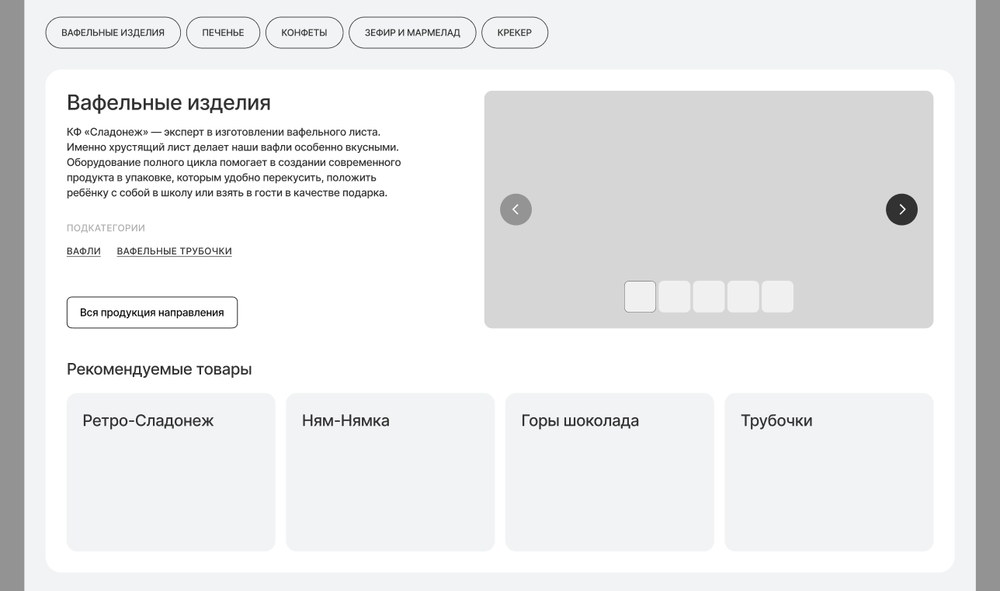
Карточка товара
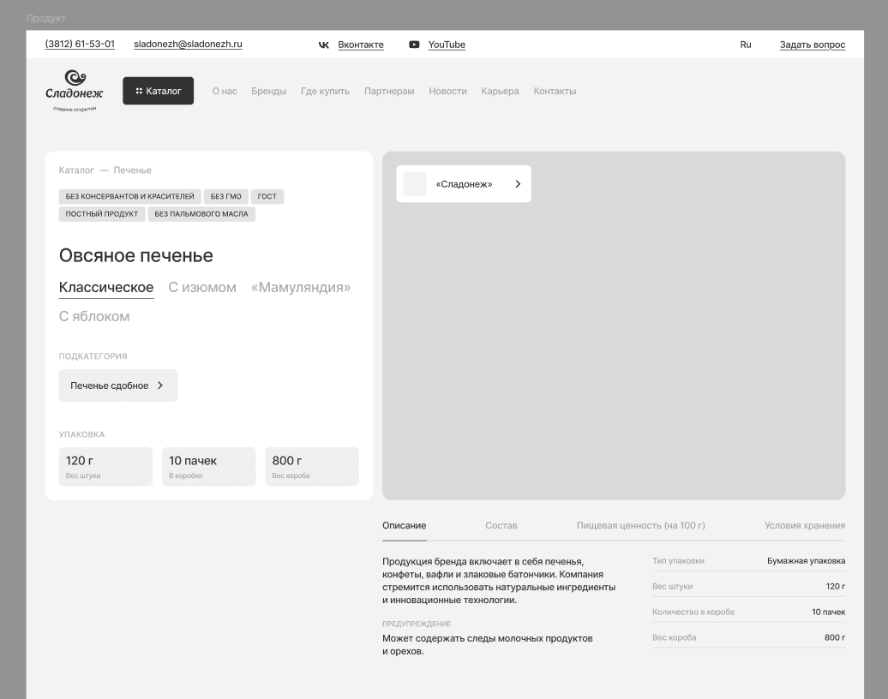
Карточка продукта содержит информацию, важную для разных типов пользователей.
Для покупателей:
- описание продукта
- состав
- вкусы
Для дистрибьюторов:
- тип упаковки
- количество продукции
- характеристики товара
Такое разделение позволяет закрыть потребности разных аудиторий.
Страница «Поставщикам»
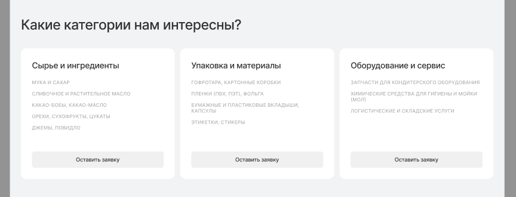
На странице «Поставщикам» мы добавили блок с категориями поставок.
Это помогает:
- сразу отсечь нерелевантные заявки
- ускорить коммуникацию.
Клиент отдельно отметил удобство этого решения.
Концепция дизайна
Я задумался, с чем у людей ассоциируются сладости: тёплый вечер, чай, большой стол и близкие рядом. Это самый частый сценарий потребления и одновременно сильная эмоциональная точка. Сначала я рассматривал идею «семьи», но понял, что это ведёт в банальный образ «идеальной рекламы» (та самая «майонезная семья»).
Тогда появилась мысль: передать идею близости через персонажей. Я решил создать для Сладика подружку — Сладулю. Это позволило показать идею «делиться с близкими» более живо и ненавязчиво. В результате получился милый персонаж, а бантик сразу добавил читаемый женский образ.
Дизайн
На главной я расположил двух персонажей вместе. Сладик передает Сладуле упаковку фирменных вафель, что напрямую отражает смысл концепции. Оба персонажа и вафли были полностью сгенерированы в Chat GPT. Над маскотами расположился крупный лайн и хэдер для навигации.
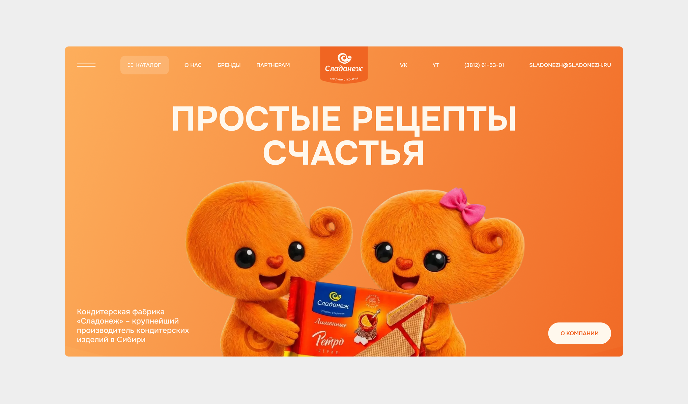
Далее на главной идут бренды. Я подумал, что будет интересно как-то креативно их подать, и пришла идея сделать это через саму продукцию.
Например, торговая марка «Сладонеж» преимущественно производит печенья, поэтому логотип я показал прямо на печенье, а рядом расположил вкусовое сочетание и парочку изображений.
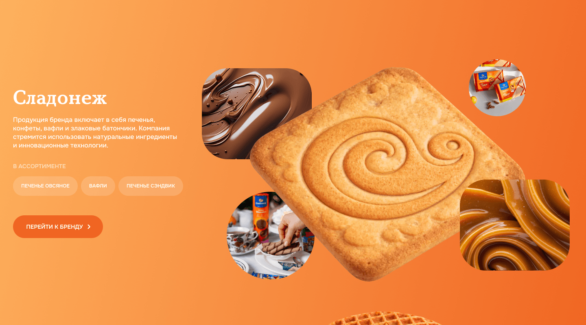
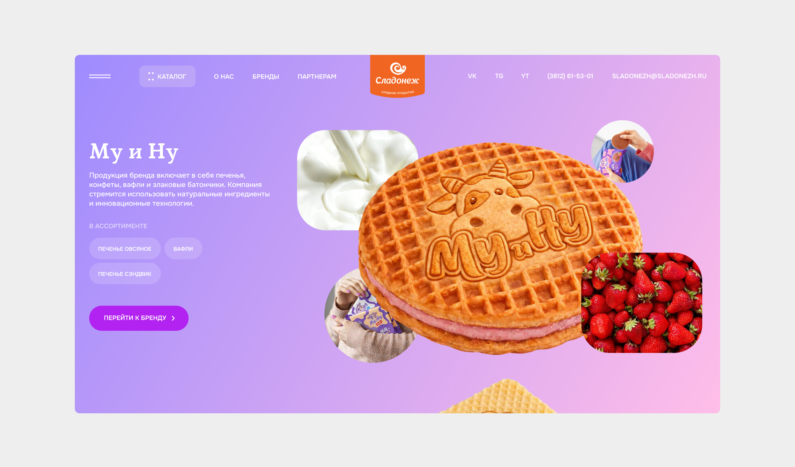
Я старался раскрывать концепцию через взаимодействие персонажей. Они взаимодействуют друг с другом во время повествования.
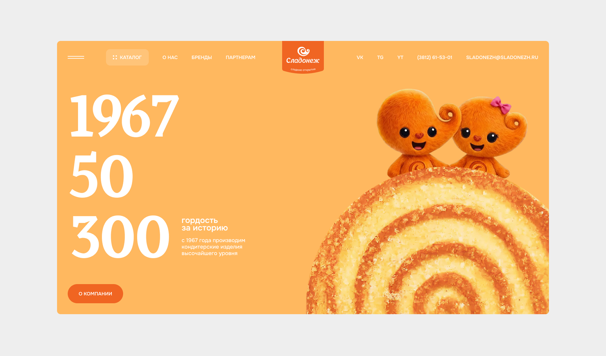
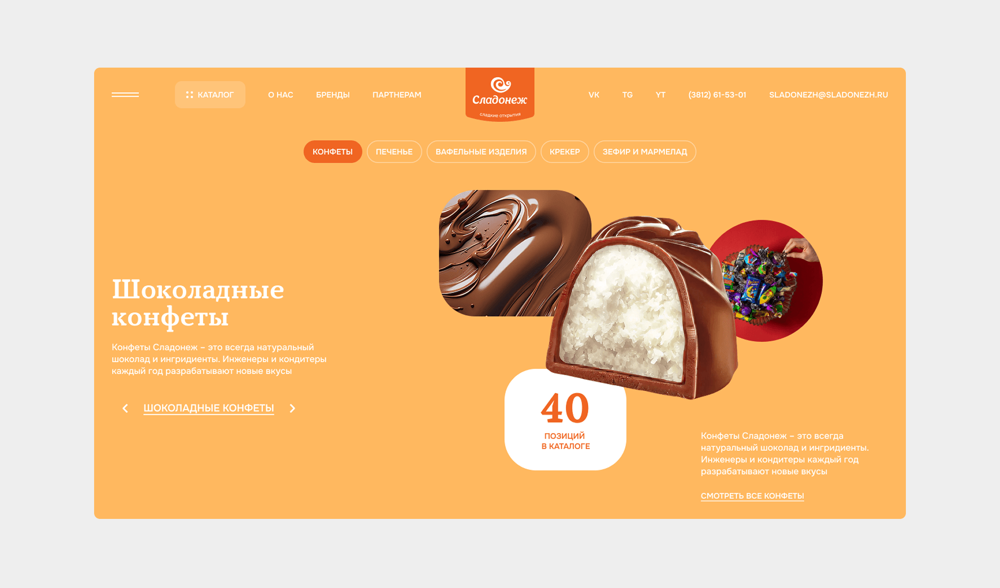
Чтобы завязать страницу брендов с концепцией, я поместил персонажей в воображаемый мир каждого бренда, исходя из его вкусовых сочетаний. Можно заметить, что каждый бренд окрашен в фирменный цвет. Сделано это специально, чтобы дополнительно увести каждый бренд в самостоятельность. Такой подход понравился клиенту, что он и отметил на встрече.


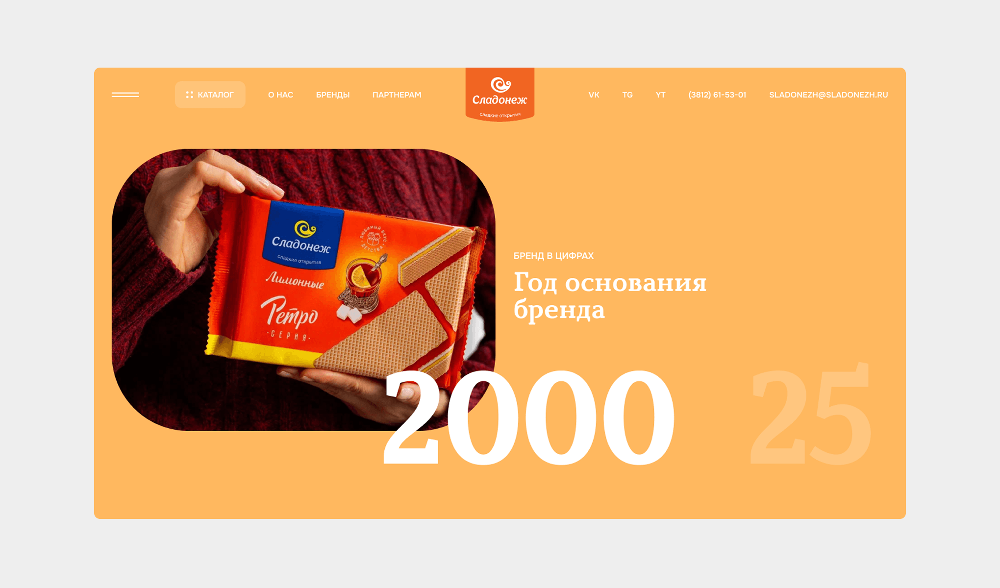
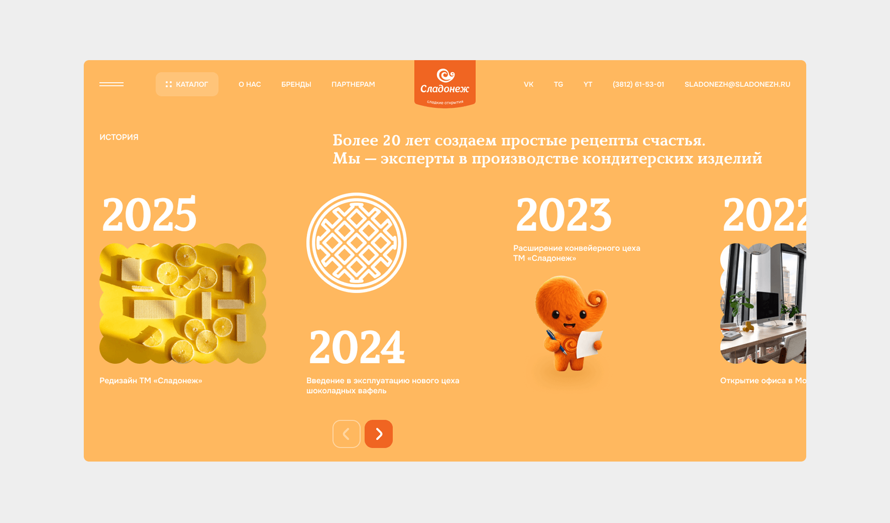
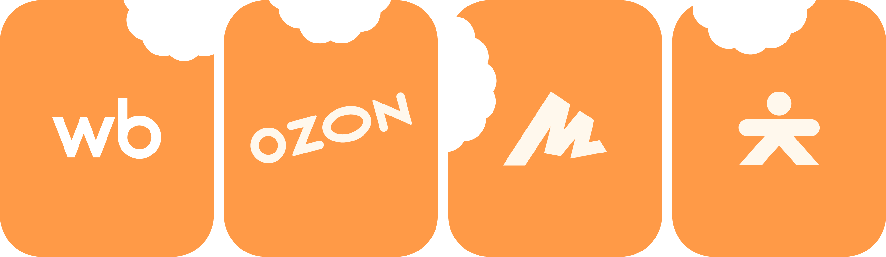
Результат
- Посещение сайта: 5.000 человек в первый месяц;
- Среднее время на сайте: 1.38 мин;
- Лидов в партнерство привлечено: 20
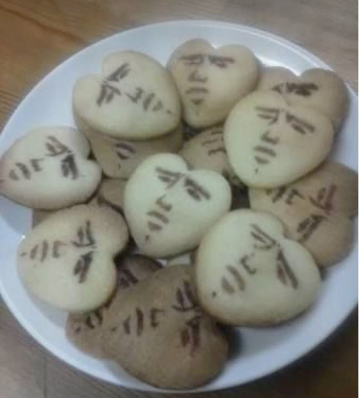
Рефлексия
Самой сложной частью проекта была генерация креативной концепции для сайта. Важно было не уйти в совсем «детскость» и показать, что Сладонеж — не только производитель сладостей, но и надежный бизнес-партнер.
У этого кейса есть более подробный вариант в BuildIn (формат Notion, работает без VPN). Если вы хотите подробнее почитать про процессы и исследования, то вам туда!
Следующий кейс